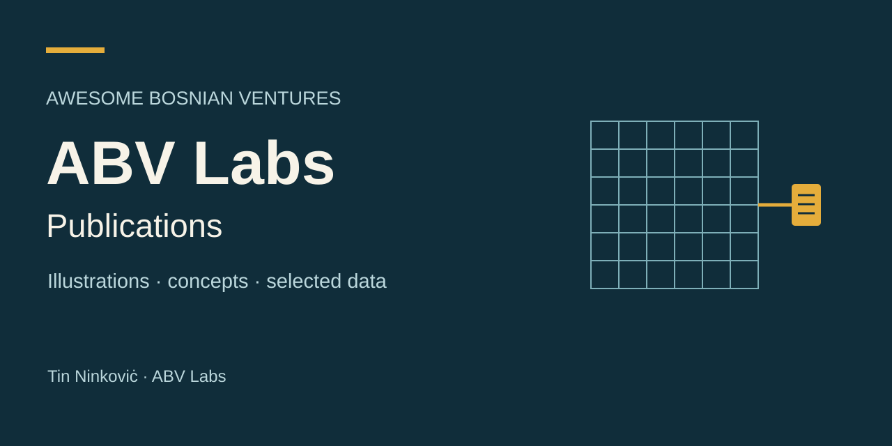
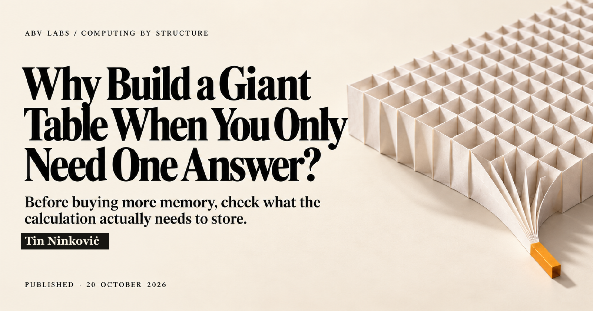

Awesome Bosnian Ventures
Start with the question.
Research explanations, illustrations and selected data from Tin Ninkoviċ and ABV Labs.

Read the latest publication

Computing by structure
Why Build a Giant Table When You Only Need One Answer?
A small worked example explains a useful distinction: the table itself, or the answers a calculation needs from it. Then inspect real historical Python allocation measurements and their limits.
An explanation you can inspect
Each publication brings its publication PDF and selected supporting material together. Read the argument first, then follow the data and sources as far as you need.
My broader research and development corpus includes implemented working architectures. Each article explains a selected part and keeps the scope of its examples and evidence visible.
More published work
Read these articles on their original publication platforms. PDF and companion downloads will appear here when their exact public editions are ready.